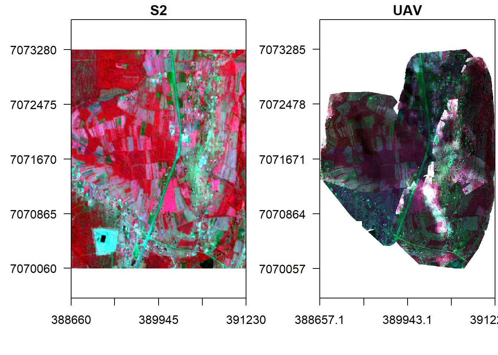
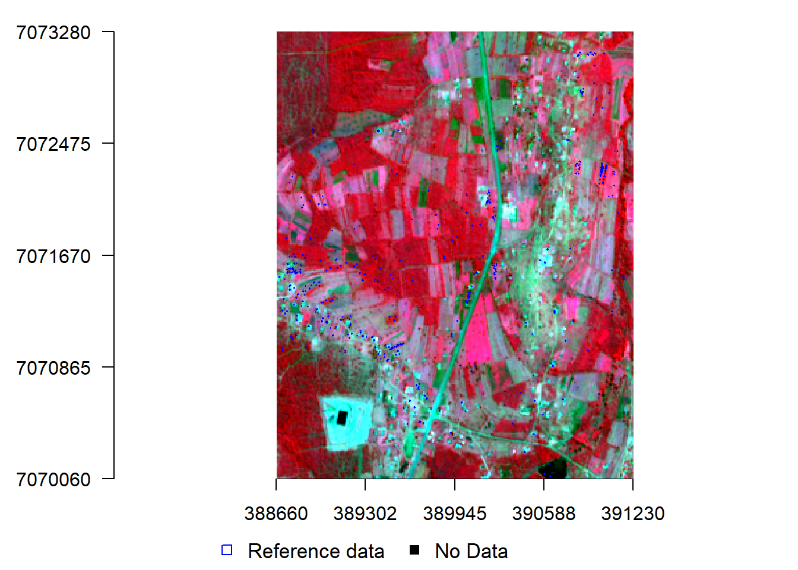

Information on spatial distribution of crops is an important step towards yield estimation. We need to know where the crops are before we estimate the yield in a given region. Ground mapping approaches like surveying are expensive and time intensive. Remote sensing offers an effective and efficient platform for mapping thanks to improved temporal and spatial resolutions. In this case we supplement optical data with UAV images for training sites collection, and image fusion for crop mapping.
For crop mapping we use two different classification algorithms:
Load libraries, declare variables and data paths.
rm(list=ls(all=TRUE)) #Clears R memory
unlink(".RData")
if (!require("pacman")) install.packages("pacman"); library(pacman)
p_load(raster, terra, randomForest,RStoolbox)
options(warn=1)
cat("Set variables and start processing\n")## Set variables and start processingRoot <- 'D:/JKUAT/RESEARCH_Projects/Eswatini/Data/'
Path_out <- paste0(Root,"Output/")Load Mpolonjeni UAV images for mission 1–5 and Sentinel 2
#Sentinel 2
path <- list.files(paste0(Root,'S2/interim/'),pattern = (".tif$"), recursive = TRUE, full.names = TRUE)
path## [1] "D:/JKUAT/RESEARCH_Projects/Eswatini/Data/S2/interim/RT_T36JUR_20210418T073611_B02.tif"
## [2] "D:/JKUAT/RESEARCH_Projects/Eswatini/Data/S2/interim/RT_T36JUR_20210418T073611_B03.tif"
## [3] "D:/JKUAT/RESEARCH_Projects/Eswatini/Data/S2/interim/RT_T36JUR_20210418T073611_B04.tif"
## [4] "D:/JKUAT/RESEARCH_Projects/Eswatini/Data/S2/interim/RT_T36JUR_20210418T073611_B08.tif"s <- rast(path)
names(s) <- c("b", "g","r", "nir")
s## class : SpatRaster
## dimensions : 10980, 10980, 4 (nrow, ncol, nlyr)
## resolution : 10, 10 (x, y)
## extent : 3e+05, 409800, 6990220, 7100020 (xmin, xmax, ymin, ymax)
## coord. ref. : +proj=utm +zone=36 +south +datum=WGS84 +units=m +no_defs
## sources : RT_T36JUR_20210418T073611_B02.tif
## RT_T36JUR_20210418T073611_B03.tif
## RT_T36JUR_20210418T073611_B04.tif
## ... and 1 more source(s)
## names : b, g, r, nir#UAV
folders <- list.dirs(paste0(Root,'WingtraOne/Mpolonjeni'),recursive=TRUE)[-1]
folders ## [1] "D:/JKUAT/RESEARCH_Projects/Eswatini/Data/WingtraOne/Mpolonjeni/m1f1"
## [2] "D:/JKUAT/RESEARCH_Projects/Eswatini/Data/WingtraOne/Mpolonjeni/m2f1"
## [3] "D:/JKUAT/RESEARCH_Projects/Eswatini/Data/WingtraOne/Mpolonjeni/m3f1"
## [4] "D:/JKUAT/RESEARCH_Projects/Eswatini/Data/WingtraOne/Mpolonjeni/m4f1"
## [5] "D:/JKUAT/RESEARCH_Projects/Eswatini/Data/WingtraOne/Mpolonjeni/m5f1f2"for (i in 1:length(folders)) {
path <- list.files(folders[i], pattern = (".tif$"))
# Remove all before and up to "reflectance_" in gsub
path <- path[order(gsub(".*reflectance_","",path))][-4]
#reorder the bands to match those in S2
paths <- path
paths[3] <- path[4]
paths[4] <- path[3]
temp <- rast(paste0(folders[i],"/",paths))
names(temp) <- c("b", "g", "r", "nir")
assign(paste0("v", i), temp)
}We now have all the image missions loaded from corresponding sub-folders, stacked, and dynamically allocated variables i.e. \(\text{v1},\text{v2},\dots,\text{v5}\). Resample all the images to 1 m spatial resolution using bilinear approach and mosaic them.
temp <- aggregate(v1[[1]], 9)
res(temp) <- c(1, 1)
v1 <- resample(v1, temp, method='bilinear')
temp <- aggregate(v2[[1]], 9)
res(temp) <- c(1, 1)
v2 <- resample(v2, temp, method='bilinear')
temp <- aggregate(v3[[1]], 9)
res(temp) <- c(1, 1)
v3 <- resample(v3, temp, method='bilinear')
temp <- aggregate(v4[[1]], 9)
res(temp) <- c(1, 1)
v4 <- resample(v4, temp, method='bilinear')
temp <- aggregate(v5[[1]], 9)
res(temp) <- c(1, 1)
v5 <- resample(v5, temp, method='bilinear')Let’s now mosaic the scenes to form one image. We will use median to average out the overlaps. Median is preferred because it has been shown to be robust to outliers compared to the mean.
v <- mosaic(v1, v2, v3, v4, v5, fun="median")## Warning: [mosaic] rasters did not align and were resampledSave the mosaic to disk.
filename <- paste0(Path_out,'Mpolonjeni_W1_Mosaic.tif')
if(!file.exists(filename)){
writeRaster(v, filename)
}Crop/clip Sentinel 2 image to UAV image extents.
s <- crop(s, ext(v), snap="near")Display the images side by side.
x11()
par(mfrow = c(1, 2)) #c(bottom, left, top, right)
plotRGB(s, r="nir", g="r", b="g", stretch="lin", axes=T, mar = c(4, 5, 1.4, 0.2), main="S2", cex.axis=0.5)
box()
plotRGB(v, r="nir", g="r", b="g", stretch="lin", axes=T, mar = c(4, 5, 1.4, 0.2), main="UAV", cex.axis=0.5)
box()
Load train data.
#ref <- vect(paste0(Root,'Vector/Training_Sites_Mpolonjeni.shp'), "polygons")
ref <- shapefile(paste0(Root,'Vector/Training_Sites_Mpolonjeni.shp'))Sample points from the polygons (stratified random sampling).
set.seed(530)
samp <- spsample(ref, 4000, type='stratified')## Warning in proj4string(obj): CRS object has comment, which is lost in output# add the land cover class to the points
samp$class <- over(samp, ref)$Name
table(samp$class)##
## built_up cassava grass maize sorghum sweet_potato
## 736 107 144 715 229 729
## trees waterbody
## 967 353sort(unique(samp$class))## [1] "built_up" "cassava" "grass" "maize" "sorghum"
## [6] "sweet_potato" "trees" "waterbody"sum(table(samp$class))## [1] 3980Transform samples to coordinates of the image.
samp <- spTransform(samp, crs(s))
nClasses <- 8
Classes <- data.frame(classID=c(1:8),class=c('Built_up','Cassava', 'Grass',
'Maize', 'Sorghum', 'Sweet_potato','Trees','Water'))Display S2 image and the training points.
add_legend <- function(...) {
opar <- par(fig=c(0, 1, 0, 1), oma=c(0, 0, 0, 0),
mar=c(0, 0, 0, 0), new=TRUE)
on.exit(par(opar))
plot(0, 0, type='n', bty='n', xaxt='n', yaxt='n')
legend(...)
}
x11()
#par(mar = c(4, 4, 1.4, 0.1)) #c(bottom, left, top, right)
plotRGB(s, r="nir", g="r", b="g", stretch="lin", axes = TRUE, mar = c(4, 5, 1.4, 0.1))
#points(samp, col="blue", cex=.5)
lines(spTransform(ref, crs(s)), col="blue", lwd=1.5)
add_legend("bottom", legend=c("Reference data", "No Data"),
pch=c(0,15), col=c("blue", "black"), horiz=T, bty='n', cex=1.1)
Extract S2 pixels values overlaid by points and split them into training and validation points.
trainData <- extract(brick(s), samp, cellnumbers=F, df=T, sp=T)
head(trainData)## class b g r nir
## 1 waterbody 0.02279999 0.0253 0.024 0.0227
## 2 waterbody 0.02279999 0.0253 0.024 0.0227
## 3 waterbody 0.02279999 0.0253 0.024 0.0227
## 4 waterbody 0.02279999 0.0253 0.024 0.0227
## 5 waterbody 0.02279999 0.0253 0.024 0.0227
## 6 waterbody 0.02279999 0.0253 0.024 0.0227library(caTools)
#(NB: 0.4 means 40% for training and 60% for validation)
labels <- as.data.frame(trainData[,1])
split <- sample.split(labels, SplitRatio = 0.4)
valid <- subset(trainData, split == FALSE)
train <- subset(trainData, split == TRUE)
table(train$class)##
## built_up cassava grass maize sorghum sweet_potato
## 248 35 46 240 75 244
## trees waterbody
## 321 118table(valid$class)##
## built_up cassava grass maize sorghum sweet_potato
## 488 72 98 475 154 485
## trees waterbody
## 646 235Classify S2 image using MLC algorithm.
mlc.run <- superClass(brick(v), trainData, responseCol = "class",
model = "mlc", minDist = 1)## Loading required package: lattice## Loading required package: ggplot2##
## Attaching package: 'ggplot2'## The following object is masked from 'package:randomForest':
##
## marginval.test <- validateMap(mlc.run$map, valid, responseCol="class", mode='classification',
classMapping = mlc.run$classMapping)Make a function to display classified images and use it to display the MLC map.
display <- function(map, method, nClasses){
windows()
par(mar = c(7, 2, 1.6, 6)) #c(bottom, left, top, right)
image(map, col=c("magenta", "darkgreen", "seagreen1" , "yellow", "darkseagreen", "green1",
"cyan","blue"), axes=T, ann=F)
classes.Palette <- colorRampPalette(c("magenta", "darkgreen", "seagreen1" , "yellow", "darkseagreen", "green1",
"cyan","blue", "white"))
add_legend("bottom", legend=c('Built_up','Cassava', 'Grass',
'Maize', 'Sorghum', 'Sweet_potato','Trees','Water', "No data"), fill=classes.Palette(nClasses+1), ncol=3, bty='n', cex=1.1, pt.bg = NA)
title(paste0(method," Classification"))
}
display(mlc.run$map, "MLC", nClasses)Lets design a fucntion for accuracy assessment.
accuracy1 <- function(val.test){
assessment.storage <- val.test$performance
#print(assessment.storage)
list_of_datasets <- list("ConfusionMatrix" = as.matrix(assessment.storage$table),
"OverallAcc" = as.matrix(assessment.storage$overall),
"byClass" = as.matrix(assessment.storage$byClass))
return(list_of_datasets)
}Assess the accuracy of MLC.
List <- accuracy1(val.test)
#Confusion matrix
List$ConfusionMatrix## Reference
## Prediction built_up cassava grass maize sorghum sweet_potato trees
## built_up 274 0 0 0 0 0 1
## cassava 0 42 0 0 0 0 0
## grass 0 0 59 21 0 0 6
## maize 10 0 1 210 3 0 10
## sorghum 0 0 0 9 80 0 2
## sweet_potato 0 0 0 0 0 237 0
## trees 0 0 3 1 0 3 330
## waterbody 0 0 0 0 0 0 0
## Reference
## Prediction waterbody
## built_up 0
## cassava 0
## grass 0
## maize 4
## sorghum 0
## sweet_potato 0
## trees 0
## waterbody 107#Overall accuracy
List$OverallAcc## [,1]
## Accuracy 0.9476292
## Kappa 0.9370111
## AccuracyLower 0.9346966
## AccuracyUpper 0.9586571
## AccuracyNull 0.2469922
## AccuracyPValue 0.0000000
## McnemarPValue NaN#by class
List$byClass## Sensitivity Specificity Pos Pred Value Neg Pred Value
## Class: built_up 0.9647887 0.9991143 0.9963636 0.9912127
## Class: cassava 1.0000000 1.0000000 1.0000000 1.0000000
## Class: grass 0.9365079 0.9800000 0.6860465 0.9969857
## Class: maize 0.8713693 0.9761092 0.8823529 0.9736170
## Class: sorghum 0.9638554 0.9917293 0.8791209 0.9977307
## Class: sweet_potato 0.9875000 1.0000000 1.0000000 0.9974490
## Class: trees 0.9455587 0.9934211 0.9792285 0.9823420
## Class: waterbody 0.9639640 1.0000000 1.0000000 0.9969372
## Precision Recall F1 Prevalence Detection Rate
## Class: built_up 0.9963636 0.9647887 0.9803220 0.20099080 0.19391366
## Class: cassava 1.0000000 1.0000000 1.0000000 0.02972399 0.02972399
## Class: grass 0.6860465 0.9365079 0.7919463 0.04458599 0.04175513
## Class: maize 0.8823529 0.8713693 0.8768267 0.17055909 0.14861996
## Class: sorghum 0.8791209 0.9638554 0.9195402 0.05874027 0.05661713
## Class: sweet_potato 1.0000000 0.9875000 0.9937107 0.16985138 0.16772824
## Class: trees 0.9792285 0.9455587 0.9620991 0.24699222 0.23354565
## Class: waterbody 1.0000000 0.9639640 0.9816514 0.07855626 0.07572541
## Detection Prevalence Balanced Accuracy
## Class: built_up 0.19462137 0.9819515
## Class: cassava 0.02972399 1.0000000
## Class: grass 0.06086341 0.9582540
## Class: maize 0.16843595 0.9237393
## Class: sorghum 0.06440198 0.9777924
## Class: sweet_potato 0.16772824 0.9937500
## Class: trees 0.23849965 0.9694899
## Class: waterbody 0.07572541 0.9819820Created 14th May 2021 Copyright © Benson Kenduiywo, Inc. All rights reserved.